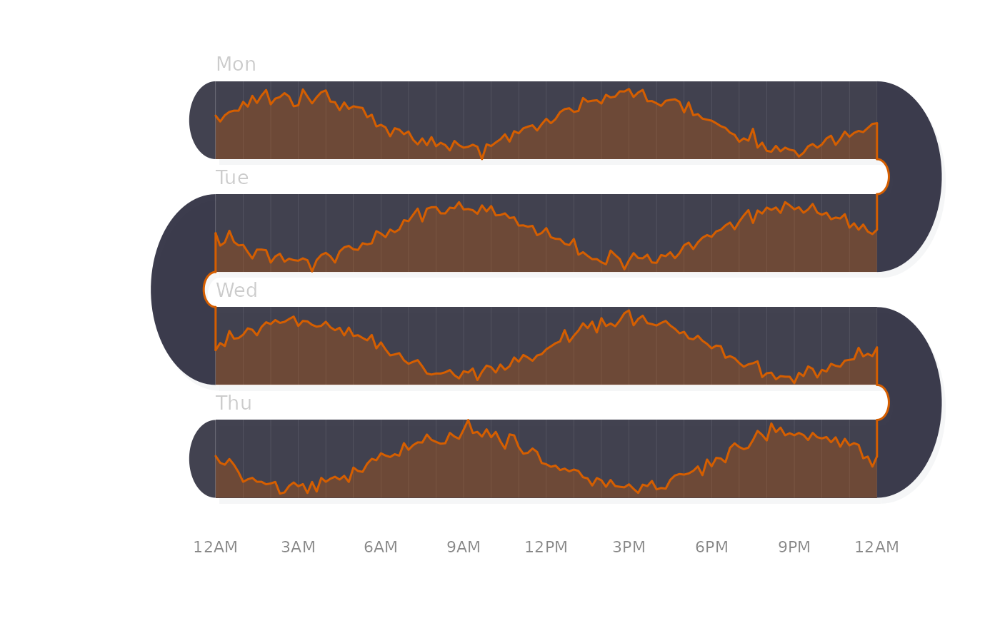

Plot a continuous series as a line through a serpentine of days
Source:R/line_snake.R
line_snake.Rdline_snake() draws a line snake plot, which shows a continuous
measurement, such as foot traffic or a sensor reading, over many days.
Each day is a band covering the same time-of-day window; within a band the
height of the line encodes the value, and the line continues through the
U-turn into the next day. The series stays unbroken while each day can be
compared with the days above and below it.
The function takes a data frame of times and values, optionally with a
day column, or a numeric vector drawn as one band of evenly spaced values.
The value axis is shared by all bands and runs from the overall minimum to
the overall maximum. An optional fill shades the area under the line. It
returns the layout invisibly as a snake_layout object. The interface of
this function is experimental and may change in a later release.
For the timing of discrete events use activity_snake(); for categorical
states use sequence_snake().
Usage
line_snake(
data,
band_height = 40,
band_gap = 18,
day_start = 0,
day_end = 1440,
plot_width = 500,
line_color = "#e74c3c",
line_width = 1.5,
fill_color = NULL,
fill_opacity = 0.3,
band_color = "#2d2d3d",
arc_color = "#1a1a2e",
band_opacity = 0.9,
arc_opacity = 0.85,
show_grid = TRUE,
shadow = TRUE,
label_color = "#cccccc",
label_size = 0.85,
orientation = c("horizontal", "vertical"),
start_from = c("left", "right"),
flow = c("snake", "natural"),
title = NULL,
margin = c(top = 30, right = 10, bottom = 50, left = 80),
background = "white"
)Arguments
- data
A data frame with columns
time(minutes after midnight, or POSIXct),value(numeric) and optionallyday(band label). With POSIXct times the band label is the abbreviated weekday, so times more than a week apart share a band. A numeric vector is drawn as a single band.- band_height, band_gap
Height of each band and gap between bands, in plot units (defaults 40 and 18).
- day_start, day_end
Time window of each band, in minutes after midnight (defaults 0 and 1440).
- plot_width
Length of each band in plot units (default 500).
- line_color, line_width
Color and width of the line (defaults
"#e74c3c"and 1.5).- fill_color, fill_opacity
Color of the area under the line,
NULL(default) for no fill, and its opacity (default 0.3).- band_color, arc_color
Colors of the bands and U-turns (defaults
"#2d2d3d"and"#1a1a2e").- band_opacity, arc_opacity
Opacities between 0 and 1 (defaults 0.90 and 0.85).
- show_grid
Draw hourly gridlines (default
TRUE).- shadow
Draw drop shadows (default
TRUE).- label_color, label_size
Color and size multiplier of the band labels (defaults
"#cccccc"and 0.85).- orientation
Only
"horizontal"(default) is supported at present;"vertical"gives an error.- start_from
Side on which the first band starts:
"left"(default) or"right".- flow
"snake"(default): bands alternate direction, so time runs on through each U-turn."natural": every band reads in the same direction.- title
Plot title, or
NULL(default) for none.- margin
Named numeric vector of
top,right,bottomandleftmargins in plot units (defaultc(top = 30, right = 10, bottom = 50, left = 80)).- background
Background color (default
"white").
Value
The plot is drawn on the current device. The function returns,
invisibly, an object of class snake_layout: a list describing the drawn
geometry, with bands (a data frame with one row per band giving its
index, position, and drawing and reading direction), arcs (a list with
one element per U-turn), canvas and plot_area (dimensions in plot
units), orientation, flow and params (the sizes used).
See also
activity_snake() for event times; sequence_snake() for
categorical states; facet_snake() for one panel per group.
Examples
# Four days of a value measured every 10 minutes
set.seed(42)
minutes <- seq(0, 1440, by = 10)
traffic <- data.frame(
day = rep(c("Mon", "Tue", "Wed", "Thu"), each = length(minutes)),
time = rep(minutes, 4),
value = 50 + 50 * sin(rep(minutes, 4) / 1440 * 4 * pi) +
rnorm(4 * length(minutes), 0, 8)
)
line_snake(traffic, line_color = "#D55E00", fill_color = "#D55E00")
